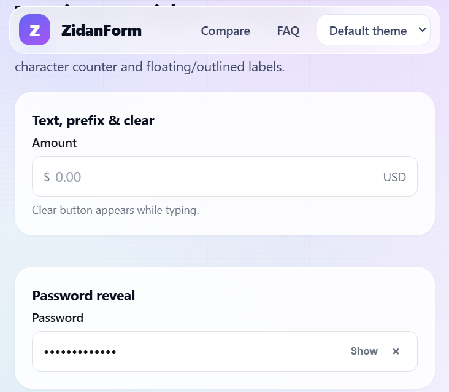

ZidanForm documentation
Zero-dependency form enhancement: select, checkbox, switch, radio, file upload, text, number, phone, date and range inputs — with input icons, steppers and upload progress. Start with the interactive demo, then dive into the reference.

- Why ZidanForm & comparison Feature matrix against Select2, Choices.js, Tom Select, Slim Select and Bootstrap, plus benefits, trade-offs and migration notes.
-
Options & data attributes
Every JS option, data attribute, callback, event and instance method — plus no-JS init by marker class, form scope,
data-zidan-optionsJSON and config targets, in the full build and both subsets. - Validation compatibility Native constraint validation, jQuery Validation, JustValidate, Parsley and double-submit guards. Runnable test bench →
- Theming Token reference, five presets, layouts, framework adapters and custom themes.
- Framework integration React, Next.js (with SSR), Vue, Angular and state-sync patterns.
- Select-only & file-only builds Trimmed JS and matching CSS for pages that only need a select or a file upload, with every theme and framework adapter included.
- Build & publish Repository layout, scripts, dist output, npm publishing and GitHub Pages.